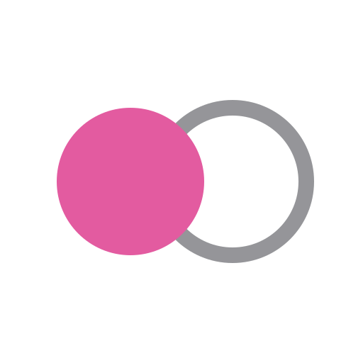
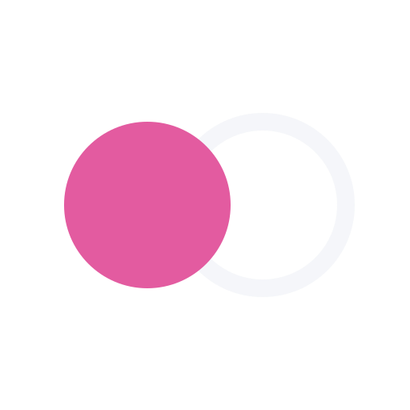
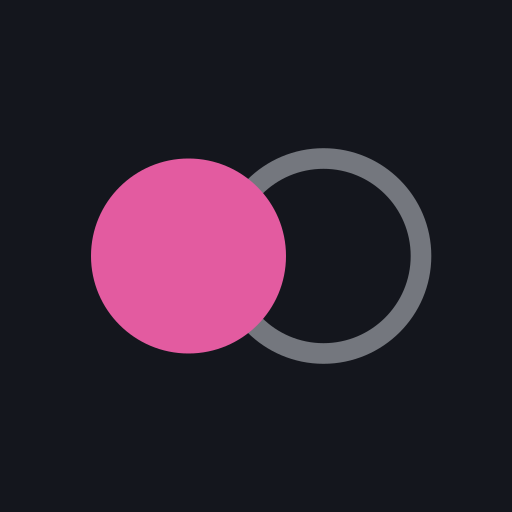
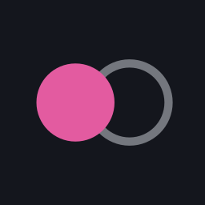
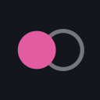
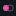

Palette
ink
#14161d
paper
#e9edf3
accent
#e35ba0
muted
#8b93a3
Mark
on light ·
mark.svgon dark ·
mark-dark.svg
raster ·
mark-512.png
raster ·
mark-dark-512.pngApp icon

vector ·
logo.svgicon-512.png
icon-256.png
icon-128.pngicon-64.pngicon-32.png
icon-16.png · favicon scalefavicon.ico (16 + 32)Wordmark
on light ·
wordmark.svgon dark ·
wordmark-dark.svgLockup
on light ·
logo-lockup.svgon dark ·
logo-lockup-dark.svgUsage
- Clear space: one solid-disc height on every side. Minimum 16 px mark, 64 px-wide wordmark.
- Light surfaces:
mark.svg,wordmark.svg,logo-lockup.svg. - Dark surfaces:
mark-dark.svg,wordmark-dark.svg,logo-lockup-dark.svg. - The solid disc is always accent; the echo disc stays hollow at about 45% opacity.
- Wordmark is Roboto Bold (SIL OFL 1.1), flattened to outlines. See
README.mdandOFL-Roboto.txt.